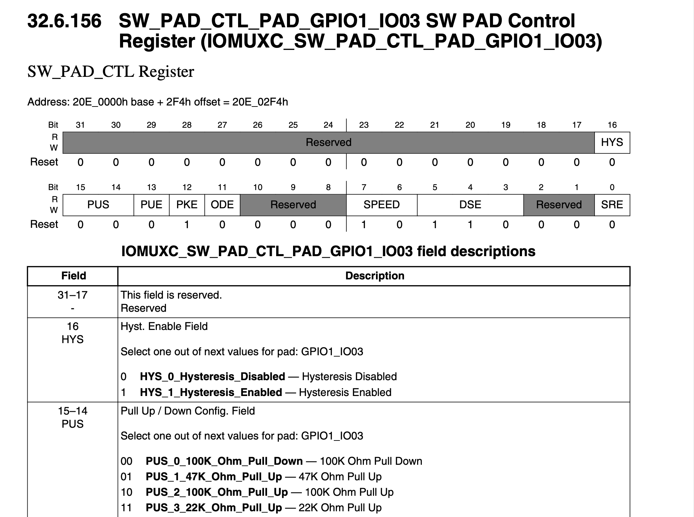

概述
- 本篇记录所有基于 IMX6UL 的实验, 从裸机实验到 Linux 实验
参考文档
问题
为什么一定要先使能 GPIO 时钟?
- 操作外设是通过外设总线来实现，只有外设总线有时钟了才能操作外设。
ARM 架构体系熟悉
要熟悉 arm 架构，您需要了解以下内容：
-
ARM 处理器架构，包括其体系结构、指令集、寄存器等。
-
ARM SoC（系统级芯片）的组成，包括 CPU、内存控制器、I/O 控制器等。
-
如何在 ARM 处理器上开发软件，包括如何编译、链接、调试等。
-
ARM 架构的生态系统，包括 RTOS（实时操作系统）、开发工具链、第三方软件库等。
-
ARM 架构在各种应用领域的使用，例如智能手机、物联网设备、嵌入式系统等。
ARM 全称是什么以及来源是什么
1985 年 4 月 26 日，第一台原型机在 Acorn 的剑桥办公室中开始运行代码，那时它被称为”Acorn RISC Machine”，随着 Acorn 公司转向衰落，处理器设计部门被分了出来，组成了一家新公司，最初叫做 Advanced RSIC Machines Ltd。现在公司和处理器都简称为 ARM。
ARM 公司卖哪些产品
主要分为两大块
1 各种 RISC 处理器内核
- 是什么
- 为什么
-
怎么办
-
系列
-
- Cortex-M 系列
-
- Cortex-R 系列
-
- Cortex-A 系列
2 出品大量的支持技术
- 这些大量的支持技术是干什么的？
-
- 满足芯片设计师和软件开发者的需要.
-
这些大量的支持技术是涵盖哪些范围?
-
- 物理 IP、软件模型和开发工具，图形处理器，以及外围设备
ARM Cortex-A7 处理器运行模式
| 模式 | 说明 |
|---|---|
| User(USR) | 用户模式,非特权模式,大部分程序运行的时候处于此模式 |
| FIQ | 快速中断模式 |
| IRQ | 默认中断模式 |
| Supervisor(SVC) | 超级管理员模式式 |
| Monitor(MON) | 监控模式 |
| Abort(ABT) | 数据访问终止模式,用于虚拟存储以及存储保护 |
| Hyp | 超级监视模式 |
| Undef(UND) | 未定义指令终止模式 |
| System(SYS) | 系统模式,用于运行特权级的操作系统任务 |
- 除了 User(USR)模式外, 其他 8 种模式都属于特权模式
阿尔法 Linux 开发板实验
阿尔法 Linux 开发板(IMX6U 开发板基础知识)
1 基础
- 首先,
IMX6ULL有对应的手册, 分为参考手册和数据手册 -
i.MX6ULL 有多种点灯方式：
-
- 1 裸机系统：汇编操作寄存器点灯、C 语言操作寄存器点灯
-
- 2 跑 Linux 系统：字符驱动 LED 点灯、设备树驱动 LED 点灯
究其本质，最终都是要操作 i.MX6ULL 的寄存器。比如，在控制 GPIO 引脚实现 LED 亮灭时，会进行类似如下的寄存器配置：
/* 寄存器物理地址 */
#define CCM_CCGR1_BASE (0X020C406C)
#define SW_MUX_SNVS_TAMPER3_BASE (0X02290014)
#define SW_PAD_SNVS_TAMPER3_BASE (0X02290058)
#define GPIO5_DR_BASE (0X020AC000)
#define GPIO5_GDIR_BASE (0X020AC004)
- I.MX6U 的 GPIO 一共有 5 组:GPIO1、GPIO2、GPIO3、GPIO4 和 GPIO5, 其中每个组最多 32 个 IO 口.
-
- 其中 GPIO1 有 32 个 IO，GPIO2 有 22 个 IO，GPIO3 有 29 个 IO、GPIO4 有 29 个 IO，GPIO5 最少，只有 12 个 IO，这样一共有 124 个 IO。
-
- 其中第一组 GPIO 的不同 IO 口命名方式为 GPIO1_IO00, GPIO1_IO01, GPIO1_IO02 以此类推.
-
IOMUXC_SW_MUX_CTL_PAD_XX_XX和IOMUXC_SW_PAD_CTL_PAD_XX_XX这两种寄存器都是配置 IO 的，注意是 IO！不是 GPIO! GPIO 是一个 IO 众多复用功能中的一种。比如 GPIO1_IO03 这个 IO 可以复用为：I2C2_SCL、GPT1_CAPTURE1、ANATOP_OTG1_ID、ENET1_REF_CLK、 MQS_RIGHT、 GPIO1_IO03、 ENET1_1588_EVENT0_IN、SRC_SYSTEM_RESET 和 WDOG3_WDOG_B 这 9 个功能，GPIO1_IO03 是其中的一种. -
想要把 GPIO1_IO03 用作哪个外设就复用为哪个外设功能即可。如果我们要用 GPIO1_IO03 来点个灯、作为按键输入啥的就是使用其 GPIO(通用输入输出)的功能。
-
IOMUXC_SW_MUX_CTL_PAD_GPIO1_IO03 寄存器和 IOMUXC_SW_PAD_CTL_PAD_GPIO1_IO03 寄存器是用来配置 GPIO1_IO03 这个 IO 口.
-
- 所以我们发现虽然 IO 口的功能是大于 GPIO 功能的，但是 IO 口的名字还是叫 GPIO
- 通过多个寄存器来调节一个
IO口作用, 一个IO口对应一个引脚, 每个引脚可以连接一个外设。I.MX6U 最多 124 个 IO 口（这里 I.MX6U 包含 I.MX6UL 和 I.MX6ULL）.

- 上面这张图应该理解为
IO 结构图，而非GPIO结构图 - 并且从上图可知，一个IO 口作为核心模型, 一个IO 口的配置分为多个部分，至少包含IOMUXC部分（可以理解为 IOMUX Config）和GPIO部分
2 怎么找到对应 GPIO 的物理地址?
查看对应的数据手册里对应端口的介绍, 其中有 Address, 如下图:

-
I.MX6ULL 的 IO 分为两类:SNVS 域的和通用的 ----> 为什么要这样分类?
-
更多 I.MX6ULL 硬件知识
3 更多 I.MX6ULL 硬件知识 ---- 更多寄存器
-
IOMUXC_SW_MUX_CTL_PAD**和IOMUXC_SW_PAD_CTL_PAD**两种寄存器用来设置 IO 的复用功能和 IO 属性 配置, 也就是我们通过设置上面这两种寄存器的不同值之后, 终于将某个 IO 口设置为了 GPIO 功能. 现在我们要接着来配置 GPIO 特有的寄存器了. -
当 IO 用作 GPIO 的时候需要设置的寄存器，一共有八个: DR、GDIR、PSR、ICR1、ICR2、EDGE_SEL、IMR 和 ISR。前面我们说了 I.MX6U 一共有 GPIO1~GPIO5 共五组 GPIO，每组 GPIO 都有这 8 个寄存器。
-
- 比如第一组 GPIO 的寄存器命名方式为 GPIO1.DR, 第二组 GPIO 的寄存器命名方式为 GPIO2.DR
-
- 由于每组 GPIO 最多 32 个 IO 口, 因此相应寄存器对应的位数也为 32 位, 每一位控制对应的 IO 口. 比如 GPIO2.DR 是 32 位寄存器、GPIO1.PSR 寄存器也是 32 位
3.1 各个寄存器含义
- DR: 数据寄存器.
-
- 比如方向寄存器设置为输出, 那么此时向数据寄存器输出 1 即可向对应 IO 口输出高电平, 输出 0 即可向对应 IO 口输出低电平.(其实就比较好控制 LED 灯这种简单设备的开或者关)
-
- 比如方向寄存器设置为输入, 那么此时就是通过读取寄存器的值获取对应 IO 口对应的电平值(是高电平还是低电平)
- GDIR: 方向寄存器, 设置某个 IO 口为输出电平或者输入电平.
- PSR: 状态寄存器. 用于获取对应 IO 口的当前状态(当前是高电平或者低电平)
- ICR1 和 ICR2: 这两个寄存器，都是中断控制寄存器，ICR1 用于配置低 16 个 IO, ICR2 用于配置高 16 个 IO, 也就是每 2 位配置一个 IO. 比如某个外设（比如键盘）可以上升沿触发中断.
- IMR: 是中断屏蔽寄存器. IMR 寄存器也是一个 IO 对应一个位，IMR 寄存器用来设置 IO 的中断禁止和使能，如果使能某个 IO 的中断，那么设置相应的位为 1 即可，反之，如果要禁止中断，那么就设 置相应的位为 0 即可。例如，要使能 GPIO1_IO00 的中断，那么就可以设置 GPIO1.MIR=1 即 可。
- ISR: 中断状态寄存器.
- EDGE_SEL: 是边沿选择寄存器. EDGE_SEL 寄存器用来设置边沿中断，这个寄存器会覆盖 ICR1 和 ICR2 的设置，同样是一个 IO 对应一个位。如果相应的位被置 1，那么就相当与设置了对应的 IO 是上升沿和下降 沿(双边沿)触发。例如，我们设置 GPIO1.EDGE_SEL=1，那么就表示 GPIO1_IO01 是双边沿触 发中断，无论 GFPIO1_ICR1 的设置为多少，都是双边沿触发。
3.2 CPU 地址范围
- 比如 CPU 内部寄存器地址，IOMUXC_SW_MUX_CTL_PAD_GPIO1_IO03 寄存器地址为 0x020e0068，IOMUXC_SW_PAD_CTL_PAD_GPIO1_IO03 寄存器地址为 0x020e02f4
- 比如 DDR 内存地址: I.MX6U-ALPHA 开发 板 上 的 DDR3 地 址 范 围 是 0x80000000~0xA0000000(512MB) 或 者 0x80000000~0x90000000(256MB)，
- 说明 IMX6ULL 开发板 CPU 的物理内存地址空间是 IO 设备和内存设备统一编址的
汇编语言点亮 LED 灯
I.MX6U-ALPHA 开发板 ，在开发板中中有一个 LED 灯，如图所示：
灯通过 3.3V 供电，经过 510 欧的限流电阻和控制口 LED0 相连，通过搜索查询，我们发现 LED0 节点和 GPIO_3 相连(应该是 GPIO1_3)
要对 IO 进行初始化，需要下面的流程：
- 使能 IO 时钟 // 这一步的作用有点类似把对应 IO 口启动时钟中断或者时钟脉冲,让对应 IO 口活动起来. ---> 理解
- 设置 IO 复用，将其设置为 GPIO // ---> 这一步能够理解, 经过配置把某个 IO 修改配置、配置为 GPIO 口
- 配置 IO 的电气属性 // ---> 这一步还不完全理解, 只是理解了压摆率
- 配置 GPIO 的特有属性，比如设置方向寄存器 // ---> 这一步理解了, 比如我这个 IO 口到底是作为输入还是输出，要根据实际情况定
- 使用 GPIO ，比如输出高低电平 // ---> 理解了, 其实就是往相应寄存器写 0 或者 1，0 关闭 LED 灯，1 点亮 LED 灯
对于 IMX6ULL 来说，流程基本是一样的，我们一步一步来设置
一 使能时钟
二 IO 口复用设置
- 这里说的是某个 IO 口的复用设置
复用设置的管理属于 IOMUX Controller 管理，查询芯片手册，我们要设置的是 GPIO1 的 IO3,要设置的是 IOMUXC_SW_MUX_CTL_PAD_GPIO1_IO03(SW_MUX_CTL_PAD_GPIO1_IO03 SW MUX Control Register )
下面有个表是对其进行说明的
led.s 代码如下:
global _start @全局变量
_start:
/*第一步 时能所有外设时钟*/
ldr r0, =0x020c4068 @CCGR0
ldr r1, =0xffffffff @要向CCGR0写入的数据
str r1, [r0] @将0xffffffff写入到CCGR0
ldr r0, =0x020c406c @CCGR1
str r1, [r0]
ldr r0, =0x020c4070 @CCGR2
str r1, [r0]
ldr r0, =0x020c4074 @CCGR3
str r1, [r0]
ldr r0, =0x020c4078 @CCGR4
str r1, [r0]
ldr r0, =0x020c407c @CCGR5
str r1, [r0]
ldr r0, =0x020c4080 @CCGR6
str r1, [r0]
/* 第二步: 配置 GPIO1_IO03 PIN的复用为GPIO
* 也就是设置IOMUXC_SW_MUX_CTL_PAD_GPIO1_IO03=5
* IOMUXC_SW_MUX_CTL_PAD_GPIO1_IO03寄存器地址为0x020e0068, 查询芯片手册得知
*/
ldr r0, =0x020e0068 @IOMUXC_SW_MUX_CTL_PAD_GPIO1_IO03, 这个地址就是上面数据手册里拿到到寄存器地址
ldr r1, =0x5 @要向IOMUXC_SW_MUX_CTL_PAD_GPIO1_IO03写入的数据, 把MUX_MODE部分设置为0101就表示把这个口子设置为GPIO模式
str r1, [r0] @将5写入到IOMUXC_SW_MUX_CTL_PAD_GPIO1_IO03中
/* 配置GPIO1_IO03的电气属性 也就是寄存器：
* IOMUXC_SW_PAD_CTL_PAD_GPIO1_IO03
* IOMUXC_SW_PAD_CTL_PAD_GPIO1_IO03寄存器地址为0x020e02f4
*/
/* 这里是bit0到bit16，一共17位要设置
@ *bit 16:0 HYS关闭
@ HYS，用来使能迟滞比较器，当 IO作为输入功能的时候有效，用于设置输入接收器的施密特触发器是否使能。
@ 明显我们这里的IO是作为输出的，因此这里要设置为0
@ *bit [15:14]: 00 默认下拉
@ PUS，用来设置上下拉电阻的，一共有四种选项可以选。默认是00，100K下拉。这个就暂时不管了，默认设置吧。但是要搞清楚什么情况下也要其他设置。
@ *bit [13]: 0 kepper功能
@ 当IO作为输入的时候，这个位用来设置 IO使用上下拉还是状态保持器。当为 0的时候使用状态保持器，当为1的时候使用上下拉。状态保持器在IO 作为输入的时候才有用，顾名思义，就是当外部电路断电以后此 IO 口可以保持住以前的状态。
@ 咱们这里这个IO口是作为输出，因此这里也是默认0.
@ *bit [12]: 1 pull/keeper使能
@此位用来使能或者禁止上下拉/状态保持器功能，为0时禁止上下拉/状态保持器，为 1时使能上下拉和状态保持器。
@ *bit [11]: 0 关闭开路输出
@当 IO作为输出的时候，此位用来禁止或者使能开路输出，此位为0的时候禁止开路输出，当此位为1的时候就使能开路输出功能。
@这里明显应该使能开路输出。那么开路输出具体是什么呢？简单看一句话（这里不一定对）：
@ 漏极开路输出一般情况下都需要外接上拉电阻，才能输出高电平。
@ 集电极开路输出是以输出电路的晶体管发射极作为公共端，并且集电极悬空的输出电路。
@ *bit [10-8]: 000 空
@ 这个bit [10-8]是保留的，不可设置，默认为0
@ *bit [7:6]: 10 速度100Mhz
@ 对应图8.1.4.2中的SPEED，当IO用作输出的时候，此位用来设置 IO速度，设置如表8.1.4.2所示。
@ 10代表100Mhz，最高是11，11代表200Mhz
@ *bit [5:3]: 110 R0/6驱动能力
@对应图 8.1.4.2 中的 DSE，当 IO 用作输出的时候用来设置 IO 的驱动能力，总共有8个可选选项，如表 8.1.4.3所示
@假设R0是260欧姆，R0/6就是43.3欧姆
@感觉这个是设置电阻大小的
@ *bit [2:1]: 00 空
@这个bit [2-1]是保留的，不可设置，默认为0
@ *bit [0]: 0 低转换率
@对应图 8.1.4.2中的SRE，设置压摆率，当此位为 0的时候是低压摆率，当为 1的时候是高压摆率。
@LED灯也算一个低俗设备吧，就设置为0
@ 0 00 0 1 0 000 10 110 00 0 = 0x10B0
*/
ldr r0, =0x020e02f4
ldr r1, =0x10b0
str r1, [r0]
/* 设置GPIO
* 设置GPIO_GDIR寄存器，设置GPIO1_IO03为输出
* GPIO1_GDIR寄存器地址为0x0209c004，设置GPIO1_GDIR的bit3为1
* 也就是设置GPIO1_IO03为输出
*/
ldr r0, =0x0209c004
ldr r1, =0x08
str r1, [r0]
/* 打开LED，也就是设置GPIO_IO03为0
* GPIO1_DR寄存器地址为0x0209c000
*/
ldr r0, =0x0209c000
ldr r1,=0x0 /*如果这里是ldr r1,=0x8, 则表示该寄存器第三位置为1，则会关闭LED灯*/
str r1, [r0]
loop:
b loop @通过 b 指令，CPU 重复不断的跳到 loop 函数执行，进入一个死循环。
- b 是跳转
- ldr： load register
- str: set register
到这里再总结下: 一个具体 IO 口，可以根据不同寄存器(比如 IOMUXC_SW_MUX_CTL_PAD_GPIO1_IO03 和 IOMUXC_SW_PAD_CTL_PAD_GPIO1_IO03)设置不同的值来控制 IO 口的作用，可以作为 GPIO 口，可以作为 UART 口或者其他口
三 IO 口电器属性设置
-

-
IOMUXC_SW_PAD_CTL_PAD_GPIO1_IO03寄存器地址为0x020e02f4
-
- 寄存器 IOMUXC_SW_PAD_CTL_PAD_GPIO1_IO03 是用来配置 GPIO1_IO03 口的电器属性的，电器属性包括速度设置、驱动能力设置、压摆率设置等等. 比如某个 IO 口首先通过 IOMUXC_SW_MUX_CTL_PAD_GPIO1_IO03 寄存器被从默认设置改成了 GPIO 口，然后又可以通过 IOMUXC_SW_PAD_CTL_PAD_GPIO1_IO03 寄存器设置电器属性，比如这个 IO 口实际连的是 EMC 则要把压摆率设置的低一些，比如这个 IO 实际连的是高速通信设备则要把压摆率设置高一些.
四 设置为 GPIO 口后, GPIO 特有配置(GPIO 特有寄存器配置)
经过上面的综合知识，我们知道了
- 要调整GPIO1_IO03 口为输出方向（要设置GPIO1 组的GPIO1.GPIR 寄存器）
-
- 这里也可以写为: 调整IO1 组-IO03 口的方向为输出,设置IO1 组的IO1.GPIR 寄存器
-
真正输出的时候是设置 IO1 组- IO03 口值为 0, 本质是设置IO1 组的IO1.DR 寄存器
接下来找到对应寄存器的值
- GPIO1.DR 寄存器地址为
0x0209_C000, 其中控制 IO03 的是该寄存器的第 3 位 - GPIO1.GPDR 寄存器地址为
0x0209_C004, , 其中控制 IO03 的是该寄存器的第 3 位
C 语言点亮 LED 灯
基础知识
ARM 每种工作模式除 R0~R15 共 16 个寄存器外，还有第 17 个寄存器 CPSR,叫做 当前程序状态寄存器
-
- R0 ~ R7 是所有模式通用的寄存器
- CPSR 寄存器，是一个 32 位寄存器,每个位的含义如下图：
- 分成了 4 部分：
1，条件标志位
N(Negative), Z(Zero), C(Carry), V(Verflow)统称为条件标志位。ARM 指令可以根据 CPSR 中的这些条件标志位来选择性的执行。
2，Q 标志位
ARM v5 的 E 系列处理器中，CPSR 的 bit[27]称为 Q 标志位。主要用于指示增强的 DSP 指令是否发生了溢出。
3，保留位 用于将来 ARM 版本的扩展。
4, 控制位
I, F, T 以及 M[4:0]统称为控制位。当异常中断发生时，这些位发生变化。在特权级的处理器模式下，软件可以修改这些控制位。
下表示控制位 M[4:0]的含义：
-
- 其中 M4:0就是设置处理器运行模式的,比如 USR 模式切换到 SVC 模式（超级管理员模式）
-
- 从上面的表格得知，把 M[4:0]切换到 10011 就进入 SVC 模式
-
状态寄存器访问指令仅有两条：
-
- MRS: 状态寄存器到通用寄存器的传送指令。比如
mrs r0, cpsr，将 cpsr 寄存器的值读到通用寄存器 r0.
- MRS: 状态寄存器到通用寄存器的传送指令。比如
-
- MSR: 通用寄存器到状态寄存器的传送指令。比如
msr cpsr, r0，将通用寄存器 r0 的值写到 cpsr.
- MSR: 通用寄存器到状态寄存器的传送指令。比如
Makefile 讲解
本教程所有的裸机例程都是烧写到 SD 卡中，上电以后 I.MX6U 的内部 boot rom 程序会将可执行文件拷贝到链接地址处，这个链接地址可以在 I.MX6U 的内部 128KB RAM 中(0X900000~0X91FFFF)，也可以在外部的 DDR 中。本教程所有裸机例程的链接地址都在 DDR 中，链接起始地址为 0X87800000。 说明这是阿尔法开发板的一个规定。
开发板 ROM 内程序启动后，自动就把 PC 指向该地址
其他问题
问题三 外设时钟使能
- I.MX6U 每个外设的时钟都可以独立的使能或禁止，这样可以关闭掉不使用的外设时钟，起到 省电的目的。
-
CCM 有 CCM_CCGR0~CCM_CCGR6 这 7 个寄存器，这 7 个寄存器控制着 I.MX6U 的所有外设时钟开关
-
根据 CCM_CCGR0 寄存器的使用说明, 我们发现如果我们要打开 GPIO2 的外设时钟，那么只需要设置 CCM_CCGR0 的 bit31 和 bit30 都为 1 即可，也就是 CCM_CCGR0=3 << 30。反之，如果要关闭 GPIO2 的外设时钟，那就设置 CCM_CCGR0 的 bit31 和 bit30 都为 0 即可。
问题四 配置 GPIO1_IO03 的 IO 属性
- 这么多
IO属性是干嘛的?
问题五 I.MX6ULL ROM 程序启动之后, 其执行地址
- 目前根据文档8.4.15来看, 启动之后 ROM 程序就会执行
0X87800000这个地址的代码.